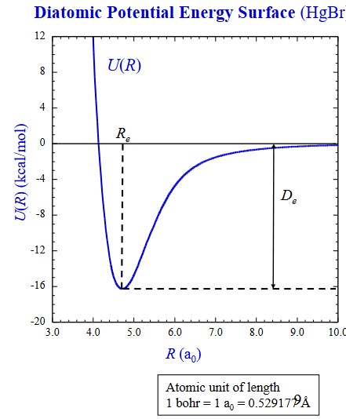
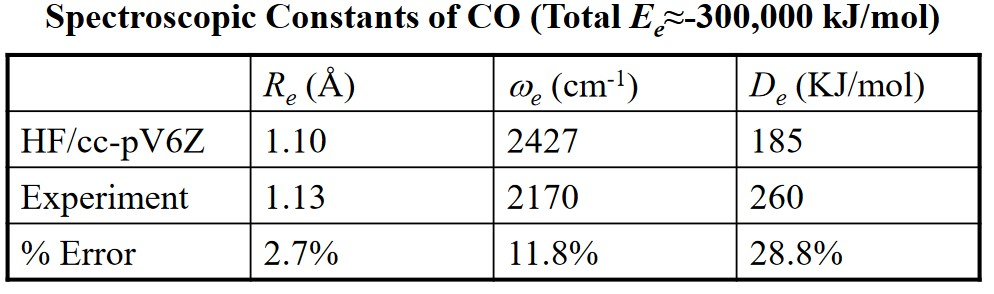
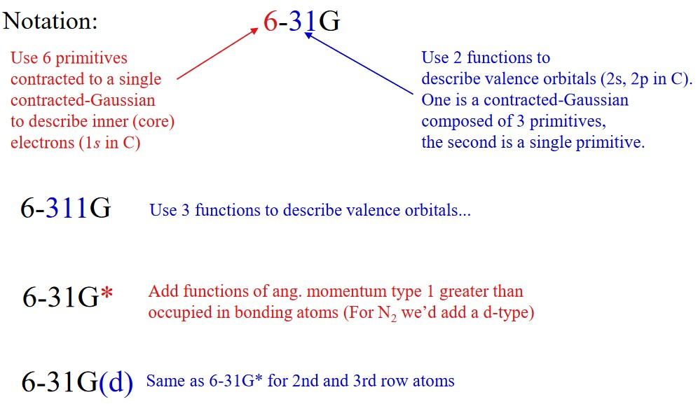

2 Fundamental Quantum Chemistry
Computational chemistry is a branch of chemistry that uses mathematical approximations and computer programs to obtain results (for chemical problems).
Computational quantum chemistry focuses specifically on equations that have been derived from principles in quantum mechanics (i.e., solving Schrodinger’s equation for molecular systems).
Ab initio quantum chemistry uses methods that do not use any empirical data.
Computational chemistry is a growing field: computers are getting faster and so are algorithms. This discipline can be used to calculate the following parameters:
- NMR spectra
- Vibrational frequencies
- Thermochemical data
The goal of this chapter is to provide a basic, high-level overview of quantum chemistry: necessary to use GaussianView and Gaussian 16.
2.1 Born-Oppenheimer Approximation
This technique in computational chemistry leads to a later concept: potential energy surfaces (i.e., PES). A PES is a graph that describes the energy of a molecule (i.e., a system) in terms of certain parameters
For molecules that have many electrons, their wavefunction is a combination of electron and nuclear coordinates. Their wavefunctions can be represented as \(\psi(R, r)\), where \(R\) are the nuclear coordinates and \(r\) the electron coordinates.
However, nuclei are way heavier than electrons, nuclei also move much slower than electrons.
\[\begin{equation} \psi(R, r) = \psi_{et}(r; R)\psi_N(R) \end{equation}\]The Born-Oppenheimer approximation allows us to separate electrons and nuclear motion via the above wavefunction approximation.
2.1.1 Schrodinger’s Equation
The time-independent Schrodinger equation is:
\[\begin{align} \hat{H}\psi &= E\psi \\ \hat{H} &= \hat{T} + \hat{V} \end{align}\]Where \(\hat{H}\) is the Hamiltonian, \(\psi\) the wavefunction, and \(E\) the total amount of energy in the system.
\(T\) represents kinetic energy and \(V\) the potential energy.
2.1.2 Solutions of the Schrodinger Equation
The equation can only be solved for simple cases (e.g., particle in a box, hydrogen atoms, rigid rotors, etc). For more complex solutions, some assumptions will need to be made.
Solving this equation also attempts to expand the wave function \(\psi\) into one of many Slater determinants - these are represented by molecular orbitals: linear combinations of atomic-like-orbital functions.
Yet, it is still possible to get very accurate results. Generally speaking, the cost of calculation increases with the accuracy of the calculation (and the size of the system).
2.1.3 Electronic Schrodinger Equation
This equation is as follows:
\[\begin{align} \hat{H}_{el}\psi_{el}(r; R) &= E_{el}\psi_{el}(r; R) \\ \hat{H}_{el} &= -\frac{\hbar^2}{2m_e}\sum_i\nabla_i^2 - \sum_\alpha\sum_i\frac{Z_\alpha e'^2}{r_{i\alpha}} + \sum_j\sum_{i > j}\frac{e'^2}{r_{ij}} \end{align}\]
In a typical potential energy graph, the potential energy takes a dip within a certain distance before it goes up:
From the above graph, the following formulas can be derived:
\[\begin{align} U(R) &= E_{el} + V_{NN} \\ V_{NN} &= \sum_\alpha \sum_{\alpha > \beta}\frac{Z_\alpha Z_\beta e'^2}{r_{\alpha\beta}} \end{align}\]
2.1.4 Nuclear Schrodinger Equation
Once a potential energy surface (i.e., PES) has been obtained for a molecule, one can solve the nuclear Schrodinger equation:
\[\begin{align} \hat{H}_N\psi_N(R) &= E_N\psi_N(R) \\ \hat{H}_N &= -\frac{\hbar^2}{2}\sum_\alpha\frac{1}{m_\alpha}\nabla_\alpha^2 + U(R) \end{align}\]The solutions of this equation allow one to determine a large amount of molecular properties - for instance, vibrational energy levels.
2.1.5 Polyatomic PESes
Where there are more than one parameters that are used to describe a molecule’s PES, the degrees of freedom is given by \(3n - 6\), where \(N\) is the number of atoms in the system.
2.2 Basic Methods
2.2.1 Solving the Electronic Schrodinger Equation
\[\begin{equation} \hat{H}_{el} = -\frac{\hbar^2}{2m_e}\sum_i\nabla_i^2 - \sum_\alpha\sum_i\frac{Z_\alpha e'^2}{r_{i\alpha}} + \sum_j\sum_{i > j}\frac{e'^2}{r_{ij}} \end{equation}\]The final term \(\displaystyle \sum_j\sum_{i > j}\frac{e'^2}{e_{ij}}\) represents electron interactions. - this is the reason that it is impossible solve the electron schrodinger’s equation.
2.2.1.1 Electron Spin and Antisymmetry
All electrons are described by a spin quantum number. The eigenfunctions describing these spins are denoted as \(\alpha\) and \(\beta\).
Electron spin also obeys the following principles:
Indisguinshability
All electrons that are spin-up are identical to one another.
Pauli’s Exclusion Principle
No two electrons can be described by the same set of quantum numbers.
Whenever two electrons are interchanged, the signs of their wavefunctions are also changed - for instance:
If a wave function \(\psi = \psi_a(1)\alpha(1)\psi_b(2)\alpha(2)\) is inverted, the result is \(\psi_a(2)\alpha(2)\psi_b(1)\alpha(1) - \psi_a(1)\alpha(1)\psi_b(2)\alpha(2)\).
2.2.2 Slater Determinants
After performing the Born-Oppenheimer approximation, one then determines the expansion of the electron wavefunction \(\psi_{el}\) via Slater determinants:
\[\begin{equation} \psi_{el} = \sum_id_i\phi_i = d_0\phi_0 + d_1\phi_1 + d_2\phi_2 + ... \end{equation}\]
The Slater determinant \(\phi_0\) is given via the below matrix. One can also choose to think about Slater determinants as a kind of “configuration” (i.e., ground-state neon might go something like \(\psi_0\) = 1s22s22p6 and so on).
\[\begin{equation} \phi_0 = \frac{1}{\sqrt{N!}}\left[ \begin{matrix} \phi_1\alpha(1) & \phi_1\beta(1) & \phi_2\alpha(1) & ... & \phi_M\beta(1) \\ \phi_1\alpha(2) & \phi_1\beta(2) & \phi_2\alpha(2) & ... & \phi_M\beta(1) \\ ... & .... & ... & ... & ... \\ \phi_1\alpha(N) & \phi_1\beta(N) & \phi_2\alpha(N) & ... & \phi_M\beta(N) \end{matrix} \right] \end{equation}\]
Where:
- \(\alpha\) and \(\beta\) are the spin-up and spin-down functions respectively.
- \(\psi_i\) the spatial functions
- \(\psi_i\alpha\) and \(\psi_i\beta\) the spin-orbitals
Slater determinants give proper anti-symmetry (i.e., the Pauli Exclusion Principle).
2.2.3 Hartree-Fock Approximations
It is impractical (and impossible) to consider all configurations of a system \(\phi_i\). Hence, the Hartree-Fock approximation is often used to approximate the wavefunction for the complete set of \(\phi_i\)s using a single determinant \(\psi_0\).
In this method, Self-consistent field energies (i.e., SCF energies) are used instead to find an optimal set of molecular orbitals for \(\psi_0\).
Each electron in this approximation only sees an average repulsion of the remaining electrons.
2.2.3.1 How Accurate is the Approximation?

Hartree-Fock wavefunctions usually approximate about 99% of the total energy. Hartree-Fock approximations can also be used to predict bond angles, thermochemistry measurements (e.g., enthalpy), and even vibrational force constants.
Quantum chemists are typically interested in energy differences and not total energies.
2.2.3.2 Electron Correlations
The electron correlation is the energy difference between an experimentally measured value (i.e., the “exact” value) and value obtained from a Hartree-Fock approximation. In more empirical terms:
\[\begin{equation} E_{corr} = E_{exact} - E_{HF} \end{equation}\]
The \(E_{corr}\) accounts for missing electron-electron interactions in the Hartree-Fock method.
Because of this, the Hartree-Fock approximation is often used as a “starting point” for finding the wavefunction.
Do also note that different correlation methods also exist - depending on which values of \(\phi_i\) and \(d_i\) to use, the value of \(E_{corr}\) might change.
2.2.3.3 Configuration Interactions
First suppose the following about electron wavefunction:
\[\begin{equation} \psi_{el} = d_0\phi_{HF} + \sum_{i = 1}d_i\phi_i \end{equation}\]
The above assumption uses the linear variation principle: the amount energy in a wavefunction is always equal to or great than the true energy.
Some other possible configurations (i.e., methods) include:
CISD
This is short for Configuration Interaction with Single and Double excitations. All determinants of “s” and “d” type orbitals are used.
MRCI
This is short for Multireference Configuration Interaction.
Both CISD and MRCI can be very accurate, but they also take a long time to process.
2.2.4 Mollet-Plesset (i.e., MP) Perturbation Theory
Perturbation methods such as these assume that the problem at hand (i.e., \(\psi\) and \(E\)) only differ slightly from a solved problem (i.e., \(HF_{\psi}\) and \(E\)).
The energy is calculated via various orders of approximations. At MP2, the calculation involves single and double excitations; higher MPs result in costlier calculations.
2.2.5 Coupled Cluster (i.e., CC) Theory
This theory leads to accurate wavefunction expansions (and yields accurate electronic charges).
Some common variants of this include:
CCSD
Which includes single and double CCs, hence its name.
CCSD(T)
This is the same as CCSD, albeit with treatments of triple excitations. This method uses accurate results when used on large basis sets.
It’s possible to get thermochemical results (i.e., enthalpy) with good accuracy.
2.2.6 Frozen Core Approximations
Here, only valence orbitals are involved in chemical bonding processes. Core orbitals don’t change much when atoms are involved in molecules (as opposed to when atoms are free).
Because of this, most electronic structure calculations only correlate with the frozen electrons (i.e., the core orbitals are kept frozen).
2.2.7 Density Frozen Theory
The wavefunction is generally uninterpretable1.
Nonetheless, a useful physical observation would be an atom’s electron density \(\rho\) as it gives the total number of electrons over space.
Density Functional Theory solves for electron density. The cost of such method is similar to Hartree-Fock approximations (and usually involve some of empirical parameterization).
This approach is often the best choice when dealing with large molecules.
2.3 Basis sets
2.3.1 Linear Combination of Atomic Orbitals-Molecular Orbitals
Given the Slater determinant \(\phi_0\):
\[\begin{equation} \phi_0 = \frac{1}{\sqrt{N!}}\left[ \begin{matrix} \phi_1\alpha(1) & \phi_1\beta(1) & \phi_2\alpha(1) & ... & \phi_M\beta(1) \\ \phi_1\alpha(2) & \phi_1\beta(2) & \phi_2\alpha(2) & ... & \phi_M\beta(1) \\ ... & .... & ... & ... & ... \\ \phi_1\alpha(N) & \phi_1\beta(N) & \phi_2\alpha(N) & ... & \phi_M\beta(N) \end{matrix} \right] \end{equation}\]
The spatial functions \(\phi_i\) can be calculated via the following equation:
\[\begin{equation} \phi_i = \sum_k^Mc_{ki}\chi_k \end{equation}\]
Where \(c_{ki}\) molecular orbital coefficients that are calculated in the SCF procedure previous outlined and \(\chi_k\) atom-centric functions that mimic solutions of hydrogen atoms (i.e., s and p orbitals).
Just like other calculations, the more accurate a calculation is, the more expensive it becomes.
2.3.2 Gaussian Type Orbitals
\(l_x\), \(l_y\), and \(l_z\) in the above graphic determines the kinds of orbitals in question (e.g., \(l = 1\) represents a “p” orbital).
The solutions of a hydrogen atom come in the form of a Slater-type function (most of which are electronic structure theory calculations):
\[\begin{equation} \chi_{\alpha, n, l, m}(r, \theta, \phi) = NY_{l, m}(\theta, \phi)r^{n - 1}e^{-\alpha r} \end{equation}\]
Where \(\chi\) can be a single Gaussian function (i.e., primitives) or a linear combination of Gaussian functions (i.e., contractives).
2.3.3 Single \(\zeta\), Mutliple-\(\zeta\), and Split-Valences
\[\begin{equation} \psi(x, y, z; \{\alpha\}, i, j, k) = \sum_{a = 1}^Mc_a\phi(x, y, z; \alpha_a, i, j, k) \end{equation}\]
STO-MG (where \(M\) is between two and six) is short for Slater Type Orbital approximated by M Gaussians. Quantum chemists found via experimentation that \(M = 3\) gave the best combination of speed and accuracy.
To increase the flexibility of a basis set, one might choose to take a STO-3G basis set and construct two basis functions for each atomic orbital. The first atomic orbital could be a contraction of the first two primitive Gaussians while the second could be a normalized third primitive. A basis with two functions for each atomic orbital is called a double-\(\zeta\) basis.
More decontractions are possible - this would give rise to higher, multiple-\(\xeta\) basis sets. More examples of such sets include cc-pCVDZ and cc-pCVTZ.
2.3.4 Polarization Functions
Due to the utility of atomic-orbital-like gaussian type orbitals, this amount of flexibility is often provided in the form of one quantum number higher of higher angular momentum than the valence orbitals. Thus, for a first-row atom, the most useful polarization function are d-GTOs2, and for hydrogens, p-GTOs.
Adding a d-function to nitrogen’s basis set causes Hartree-Fock approximations to correctly predict a trigonal pyrimidal shape for ammonica.
2.3.5 Diffuse Functions
The highest-energy molecular orbitals of anions, highly-excited electron states, and loose supermolecular complexes are more spatially diffuse than garden-variety molecular orbitals.
When a basis set doesn’t have enough flexibility to allow a weakly-bonded electron to localize far from the remaining density, significant errors in energies and other molecular properties can occur.
To address the aforementioned, standard basis sets often augmented with diffuse basis functions when their use is warranted.
2.3.5.1 Pople and Dunning-Style Basis Sets
2.3.5.1.1 Pople-Style Basis Sets
This was named after professor John Pople who won the Nobel Prize in Chemistry in 1998 for his work in quantum chemistry.

In this family, diffuse functions are denoted by having a “+” in their basis sets’ names. Hence, “6-31 + G(d)” means that heavy atoms have been augmented with one additional “one s” and one set of “p” functions that have small exponents.
A second plus indicates diffuse “s” functions on a hydrogen atom (e.g., “6-3H++G(3d,f 2pd)”).
2.3.5.1.2 Dunning-Style Basis Sets
Here, diffuse functions are indicated by an “aug”; one set of diffuse functions will be added for each angular momentum already present. Hence “aug-cc-pVTZ” has diffuse “s”, “p”, “d”, and “f” functions on heavy atoms and diffuse “s”, “p”, and “d” functions on hydrogen and helium atoms.
2.3.6 Correlation-Consistent Basis Sets
These are designed so that have the unique property of forming a systematically-converging set.
Correlations with correlation consistent (i.e., cc) basis sets lead to accurate estimates of the complete basis set limit (i.e., CBS) limit.
Professor Mu’s slides lists the notation of cc sets and some examples.